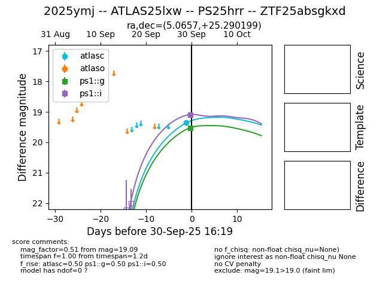
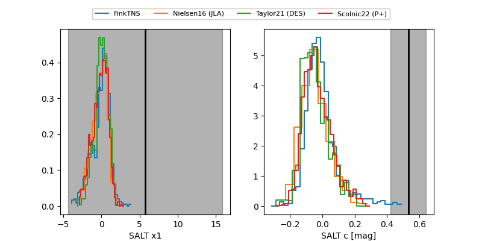

FINK: ZTF25absgkxd
Lasair: ZTF25absgkxd
ALeRCE: ZTF25absgkxd
TNS: 2025ymj
YSE: 2025ymj
2025ymj (yse,tns)
ATLAS25lxw (atlas)
ZTF25absgkxd (ztf,fink)
PS25hrr (panstarrs)
equatorial (ra, dec) = (5.0657,+25.29020)
galactic (l, b) = (114.0953,-37.04606)


last atlasc=19.35, ps1::g=19.53, ps1::i=19.09
1 atlasc, 1 ps1::g, 1 ps1::i detections